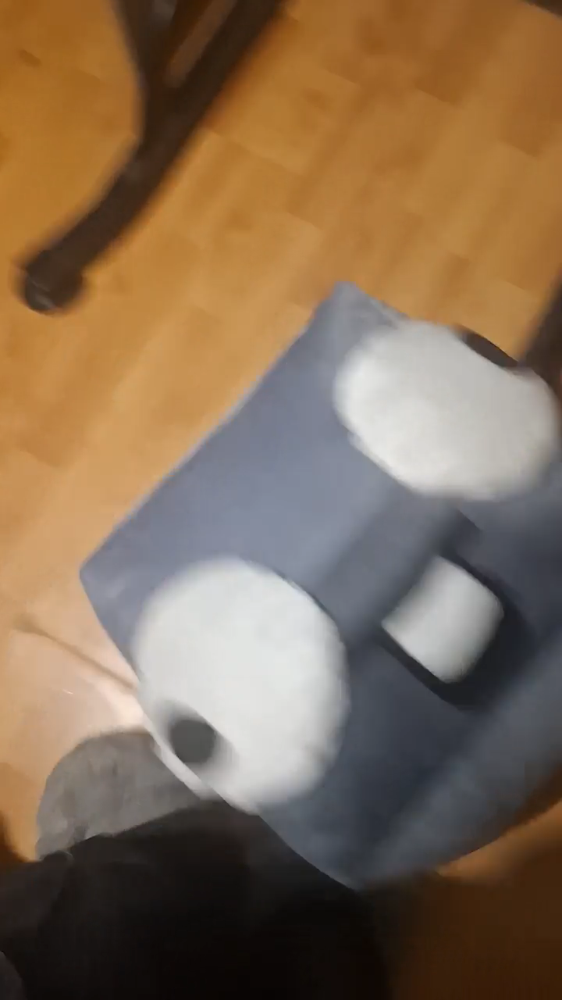

Avó de jogador confecciona pelúcia personalizada de seu ícone de Geometry Dash e encanta comunidade
Criação artesanal reproduz o cubo utilizado pelo jogador no jogo; publicação recebe elogios e desperta interesse de outros fãs

Uma publicação no Reddit chamou a atenção da comunidade de Geometry Dash após um jogador compartilhar uma pelúcia personalizada de seu próprio ícone, confeccionada por sua avó. O resultado recebeu diversos elogios e rapidamente se tornou motivo de comentários carinhosos entre os usuários.
A publicação foi feita por XyloPins no subreddit r/geometrydash, acompanhada de uma fotografia do boneco. A peça reproduz o visual do ícone utilizado pelo jogador dentro do jogo, transformando um elemento virtual em um objeto físico.
O trabalho chamou atenção principalmente pelo nível de personalização. Em vez de produzir uma pelúcia genérica de Geometry Dash, a avó criou uma versão baseada diretamente no ícone de seu neto, tornando o presente ainda mais especial.
Comunidade aprova o resultado
A reação dos jogadores foi amplamente positiva. Diversos comentários elogiaram tanto a aparência da pelúcia quanto a iniciativa da avó.
Expressões como “W grandma” — uma maneira informal de elogiar alguém na comunidade — apareceram repetidamente entre as respostas. Outros usuários disseram que o boneco era adorável e recomendaram que o jogador nunca trocasse seu ícone.
Alguns também demonstraram interesse em conseguir uma pelúcia semelhante. Houve até quem perguntasse se seria possível encomendar uma versão personalizada para si.
O próprio autor explicou que sua avó estaria produzindo peças por aproximadamente 40.000 a 50.000 pesos chilenos, equivalentes a cerca de 40 a 50 dólares. Entretanto, também comentou que o envio internacional seria complicado devido ao tamanho do produto.
Um presente que ultrapassou o jogo
Além da qualidade do trabalho artesanal, a publicação chamou atenção por outro motivo: o carinho envolvido na criação.
Um dos comentários destacou como era especial ter alguém na família disposto a apoiar o interesse do jogador, enquanto outros aproveitaram para elogiar a avó e desejar que ela continuasse produzindo trabalhos semelhantes.
A publicação mostra uma maneira diferente de demonstrar o carinho por Geometry Dash. Um ícone que normalmente existe apenas na tela acabou ganhando uma versão física feita especialmente para seu jogador.
Para a comunidade, a pelúcia não foi apenas mais um objeto personalizado: tornou-se uma demonstração de criatividade e apoio familiar que conquistou os fãs.
Reddit — r/geometrydash